Introduction to QGIS (Full Course Material)
A broad introduction to mapping and spatial analysis with QGIS.
Ujaval Gandhi

Introduction
This is an introductory course that covers QGIS from the very basics. You will learn how to use QGIS for mapping, spatial data processing and spatial analysis. This class is ideal for participants with a basic knowledge of GIS and want to learn how to use QGIS carry out common GIS tasks.

Software
This course requires QGIS LTR version 3.22.
Please review QGIS-LTR Installation Guide for step-by-step instructions.
Get the Data Package
The code examples in this class use a variety of datasets. All the required datasets and Jupyter notebooks are supplied to you in the python_dataviz.zip file. Unzip this file to a directory - preferably to the <home folder>/Downloads/introduction_to_qgis/ folder.
Visualizing Spatial Data
In this exercise, we will learn basic data processing and visualization techniques. We will use geographic boundaries and population count data for the City of New York and create a population density map.
Part1: Data Pre-Processing
- Open QGIS. The first step is to import the source datasets. Click on the Open Data Source Manager button.

- Select the Vector tab. Click the … button next to Vector Dataset(s) and browse to the data directory. Select the
nynta2010.shpfile and click Open. In the Data Source Manager window, click Add.

- You may be prompted to Select Transformation for nynta2010. The source shapefile is in the
EPSG:2263 NAD83 / New York Long Island (ftUS)projection whereas the default projection in QGIS isEPSG:4326 - WGS84. This dialog presents several transformations to convert between the coordinates between these projections. Choose the first option and click OK.

- A new layer
nyta2010will be added to the Layers panel and will be displayed on the Canvas. This layer contains polygons representing the Neighborhood Tabulation Areas (NTAs) for New York city. Right-click on thenyta2010layer and select Open Attribute Table.

- Examine the attributes of the layer. The
NTACodefield contains a unique identifier for each polygon. Notice that we do not have any population or demographic attributes in this layer.

- The population and other demographic datasets are typically distributed as tables. These tables would have the same unique identifier as the shapefile that can be used to merge the relevant fields to the vector layer. Let’s import a table representing New York City Population By Neighborhood Tabulation Areas. Click on the Open Data Source Manager button.

- Switch to the Delimited Text tab. Browse to the
New_York_City_Population_By_Neighborhood_Tabulation_Areas.csvfile and select it. Since this CSV file is just tabular data, select No geometry (attribute only table) option and click Add.
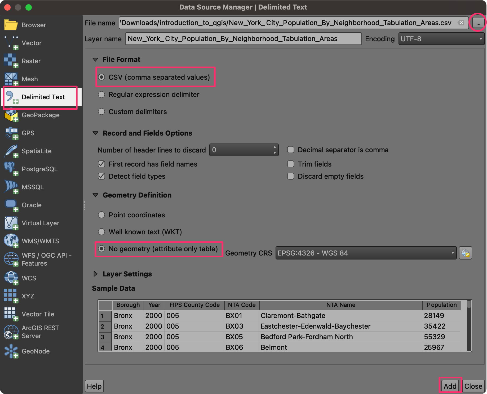
- Once the new tabular layer
New_York_City_Population_By_Neighborhood_Tabulation_Areasis added to the Layers panel, right-click on it and select Open Attribute Table.

- This table has a Population column with the population for each of the tabulation areas. We also have the NTA Code column containing the same codes as our
nynta2020layer. We can use this column to join this table with the vector layer.

- Open Processing → Toolbox from the main menu at the top.

- Search and locate the algorithm Vector general → Join attributes by field value and double-click to launch it.

- In the Join Attributes by Field Value dialog, select
nynta2010as the Input layer andNTACodeas the Table field. SelectNew_York_City_Population_By_Neighborhood_Tabulation_Areasas the Input layer 2 andNTA Codeas the Table field 2. Click the … button next to Layer 2 fields to copy.

- We want to copy only the population data, so select the
Populationfield and click OK.
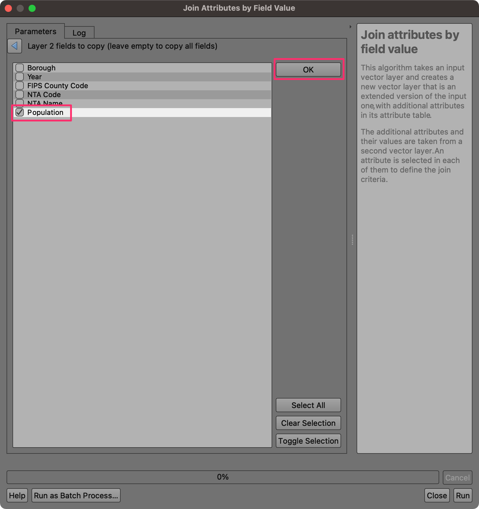
- Next, we need to configure the output. Click the … button next to Joined layer and select Save to File….

- Browse to the data directory and name the output as
nynta_with_population. Make sure the file type is selected as GPKG files (*.gpkg). Click Save.
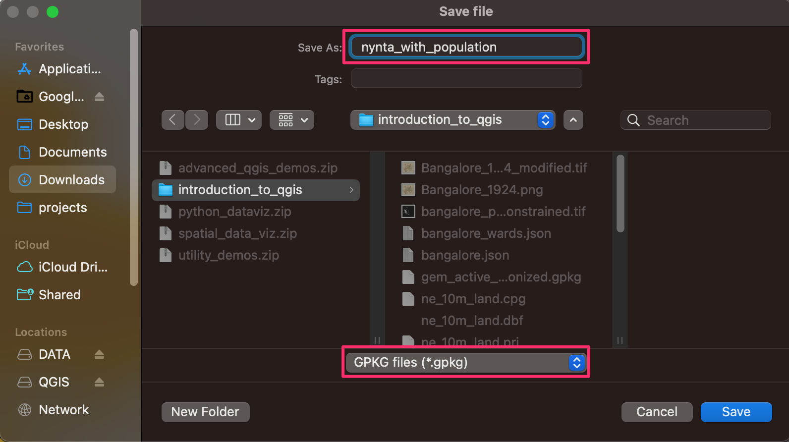
- Once the configuration is complete, click the Run button.

- Upon completion of processing, a new layer
nynta_with_populationwill be added to the Layers panel. Right-click the layer and select Open Attribute Table. You will see that we now have an additional column Population in the attribute table. The table also has a column Shape_Area containing the area of each polygon in Sq.Ft.

- Our goal is to map the population density. We can use the population count and area columns and calculate a new column for population density. From the Processing Toolbox, search and locate the algorithm Vector table → Field Calculator and double-click to launch it.

- In the Field Calculator dialog, enter
Densityas the Field Name. We will now build the expression to calculate population density. From the function groups next to the Expression panel, expand the Fields and Values section. Double-click thePopulationfield to add it to the expression editor. Note that fields are referred using double-quotes (") in QGIS.

- Select the / button to enter the division operator and then click the
Shape_Areafield to enter it. You may also type the expression instead of picking the values from the dialog. The final expression should look like below.
"Population" / "Shape_area"
- This will give us the population density in persons per square feet. A more appropriate unit for population density is persons per square miles. Let’s convert the value to miles using the conversion factor or 1 mile = 5280 ft. Change the expression as shown below. Once done, select Save to File.
5280 * 5280 * ("Population" / "Shape_area")
- Name the output as
nynta_population_density.gpkgand click Run.

- Once the processing finishes as new layer
nynta_population_densitywill be added to the Layers panel. Open the attribute table and verify that you have a new column named Density.

- We don’t need the other layers in our project. Hold the Shift key and select all layers except
nynta_population_density. Right-click and select Remove Layer….

- Let’s save our work so we can retrieve it later. Go to Project → Save.

- Save the project as
NYC_Population_Densityand click Save. QGIS will save the project file in the QGZ format.

We have now finish the first part of this exercise. Your output should match the contents of the NYC_Population_Density_Checkpoint1.qgz file in the solutions folder.
Challenge
Round the population density values to the nearest integer and store them in another column named Density_Round.
- Hint1: Use the Field Calculator algorithm from the processing toolbox.
- Hint2: The QGIS expression engine has a function named
round()that can round a fraction to the chosen number of decimal places.
Part-2: Create a Choropleth Map
- Continuing the exercise, we will now visualize the spatial distribution of population density in form of a choropleth map. From the Layers panel, click the Open the Layer Styling panel button.

- Select the
Graduatedrenderer.

- As we want to map the population density, choose
Densityas the Value.

- Next we select a color ramp. Click the drop-down button next to Color Ramp, select All Color Ramps and pick the
YlOrBr(Yellow-Orange-Brown) ramp.

- Change the Classes value to
6and click Classify. You will see each polygon colored according to the population density attribute.

- The default mode of classification is Quantile - which tried to divide the input data such that all 6 classes have approximately equal number of features. There are other modes of classification as well. You can learn more about Data Classification Modes in the QGIS Documentation. We can also define custom data ranges for each class. Click on the Values column for the first row in the classification table. Change the *Upper value8 to
20000.

- Similarly change other class ranges so they become easy to interpret. The last row contains the upper value to the maximum value in the dataset. Instead of displaying the maximum value, we can update the label. Click the Legend column for the last row.

- Change the label to
> 100000.

- Now you have an informative visualization of population density in New York city with an easy to interpret legend. Click the Save button to save your work. All your visualization settings are saved along with the project, so next time when you load this project in QGIS, you will see the same visualization.

We have now finish the second part of this exercise. Your output should match the contents of the NYC_Population_Density_Checkpoint2.qgz file in the solutions folder.
Creating Maps
Georeferencing
Most GIS projects require Georeferencing some raster data. Georeferencing is the process of assigning real-world coordinates to each pixel of the raster. Many times these coordinates are obtained by doing field surveys - collecting coordinates with a GPS device for few easily identifiable features in the image or map. In some cases, where you are looking to digitize scanned maps with grid markings, you can obtain the coordinates from the markings on the map image itself. Using these sample coordinates or GCPs (Ground Control Points), the image is warped and made to fit within the chosen coordinate system.
Georeference a Scanned Map
In this exercise, you will learn the process and strategies to achieve a high accuracy georeferencing in QGIS. We will take a scanned map of Bangalore in 1924. This map is possibly hand-drawn, so scale and projection information is not available. We will use the OpenStreetMap basemap to identify coordinates of features from the scanned map and rectify the map to a lign with the basemap.
- Open QGIS. Add the OpenStreetMap basemap from Web → QuickMapServices → OSM → OpenStreetMap layer.
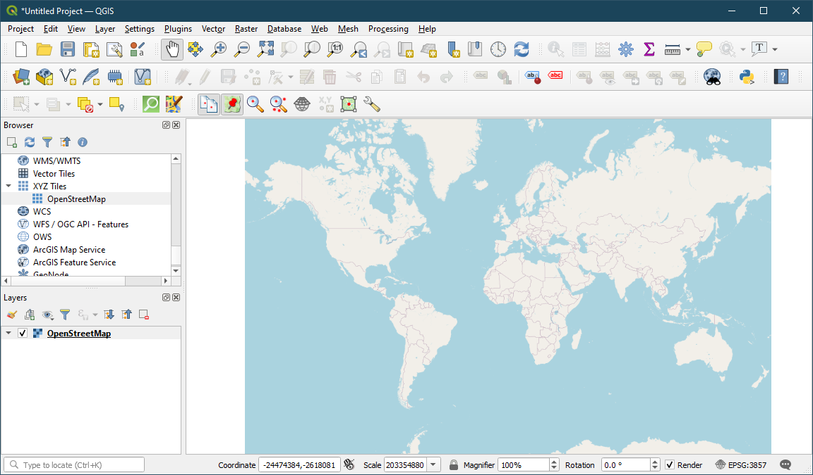
- Go to Raster → Georeferencer…

- The Georeferencer window is divided into 2 sections. The top section where the image will be displayed and the bottom section where a table showing your GCPs will appear.

- Go to File → Open Raster. Browse to the
Banglore_1924.pngand click Open.
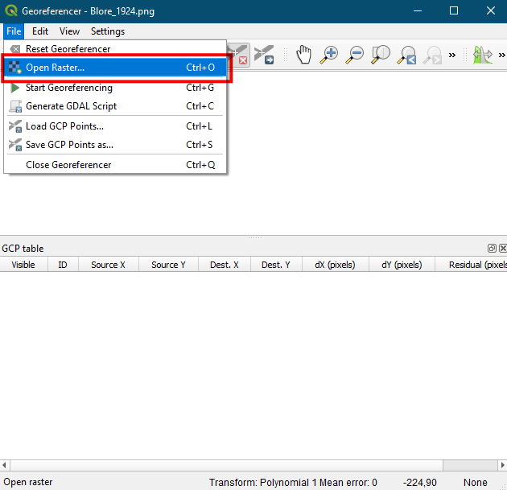
- The toposheet will be loaded on the top section. You can use the Zoom/Pan controls in the toolbar to learn more about the map.
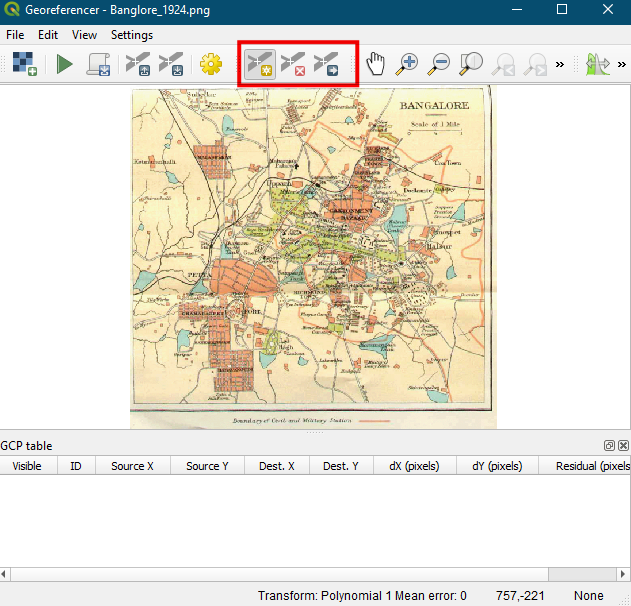
- To assign coordinates to reference points (ground reference points) on this map. Click the Add points button and click on a location that can be located in
Openstreetmap. Select From Map Canvas.
Always select points from permament structures such as road intersections, junctions, big-building corners etc.. It is not advisable to georeference using the natural structure such as river edges, hill tops, etc. as they can change over time.
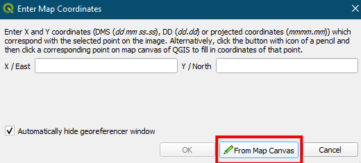
- Select a minimum of 6 GCPs for georeferencing, usually a higher number of GCPs will be useful in reducing the error.
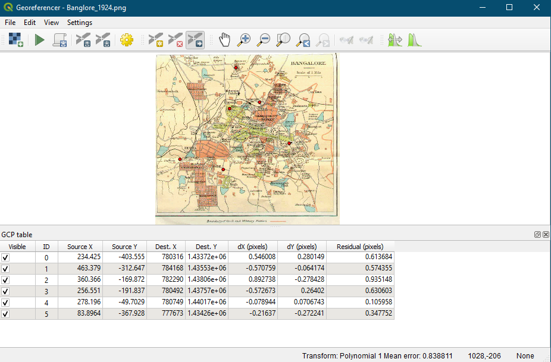
- Click on Settings, Transformation type as Polynomial 2, Resampling method as Nearest neighbourhood, Target SRS as WGS 84 / Pseudo-Mercator EPSG : 3857, Output layer as Banglore_1924_modified.tif. Also choose LZW as the Compression type, Check Save GCP Points and Load in QGIS when done. And Click OK.
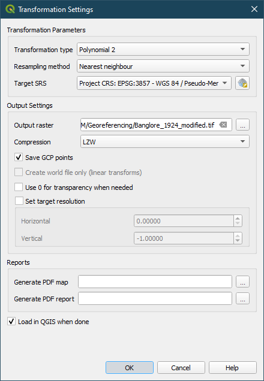
- Now the GCPs now have a non-zero dX, dY and Residual error values. If a particular GCP has unusually high error values, that usually means a human-error in entering the coordinate values.
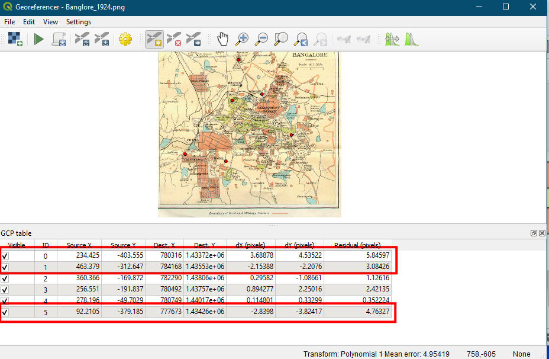
- You can delete that GCP and capture it again. Repeat the process till the errors are acceptable.
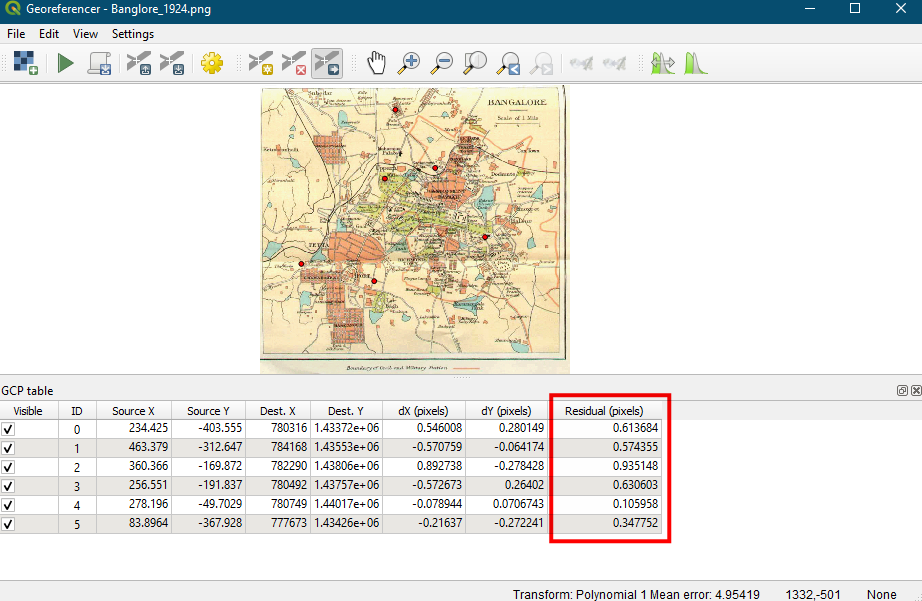
- Click the Start Georeferencing button to start georeferencing. This will start the process of warping the image using the GCPs and creating the target raster.
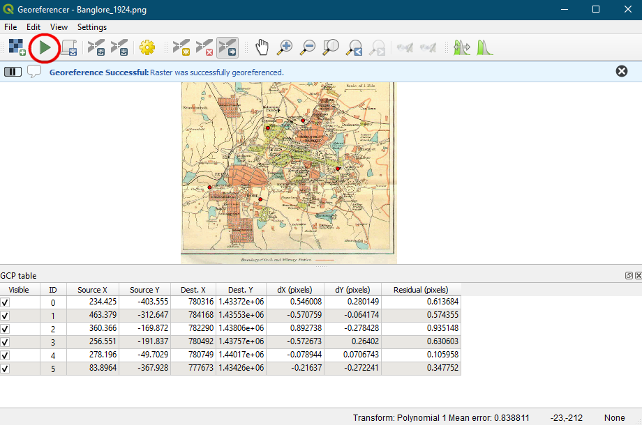
- The georeferenced map will be loaded in main window as
Banglore_1924_modifiedand can be validated with theOpenstreetmapbasemap in QGIS.

Exercise
Change the Transformation type to Thin Plate Spline and run the georeferencing process again. Compare the results with the previous output.s
Digitizing
Digitizing is one of the most common tasks that a GIS Specialist has to do. Often a large amount of GIS time is spent in digitizing raster data to create vector layers that you use in your analysis. Many machine learning projects also require creating labeled dataset that needs tyo be created by digitizing features from satellite imagery or historic maps. QGIS has powerful on-screen digitizing and editing capabilities that we will explore in this tutorial.
Digitize Historic Lakes
We will take the georeferenced map created in the previous exercise and create a polygon layer representing the lakes in the city of Bengaluru in 1924. Bengaluru has experienced rapid urbanization and many of these historic lakes no longer exist. This exercise will allow you to create a vector layer and discover the lakes that are fully or partially lost.
Data Credits
- OSM Tile Layer, Bangalore Metro Stations : (c) OpenStreetMap contributors
- Bangalore Ward Maps Provided by Spatial Data of Municipalities (Maps) Project by Data{Meet}.
- Karnataka Population Grid 2020: Downloaded from WorldPop - School of Geography and Environmental Science, University of Southampton; Department of Geography and Geosciences, University of Louisville; Departement de Geographie, Universite de Namur) and Center for International Earth Science Information Network (CIESIN), Columbia University (2018). Global High Resolution Population Denominators Project - Funded by The Bill and Melinda Gates Foundation (OPP1134076). https://dx.doi.org/10.5258/SOTON/WP00645
License
This course material is licensed under a Creative Commons Attribution-NonCommercial 4.0 International License. You are free to use the material for any non-commercial purpose. Kindly give appropriate credit to the original author.
If you would like to utilize these materials as part of a commercial offering, you can purchase a Trainer License for a small fee.
Please contact us for pricing and terms.
© 2022 Ujaval Gandhi www.spatialthoughts.com
This course is offered as an instructor-led online class. Visit Spatial Thoughts to know details of upcoming sessions.